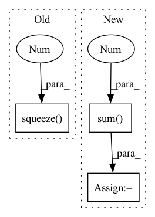

Pattern ID :31515
Before Change
j = torch.arange(heatmaps.shape[1]).reshape(1, -1, 1, 1)
k = locs[:, :, None, 1, None].type(torch.int64) // y first
l = locs[:, :, 0, None, None].type(torch.int64) // x second
vals = heatmaps[i, j, k, l].squeeze(-1).squeeze(-1 ) // get rid of singleton dims
return vals
After Change
l_offset = torch.clamp(l_offset, min=0, max=heatmaps.shape[2]-1)
vals = heatmaps[i, j, k_offset, l_offset].squeeze(-1).squeeze(-1) // get rid of singleton dims
vals_all.append(vals)
vals = torch.stack(vals_all, 0).sum(0 )
return valsIn pattern: SUPERPATTERN
Frequency: 5
Non-data size: 3
Instances Fragment ID: 92173162
Project Name: danbider/lightning-pose
Commit Name: c2ea4f5fc3841def2213fb073698b9178edea896
Time: 2022-07-22
Author: colehurwitz@gmail.com
File Name: lightning_pose/data/utils.py
M Class Name: AnonimousClass
N Class Name: AnonimousClass
M Method Name: evaluate_heatmaps_at_location(3)
N Method Name: evaluate_heatmaps_at_location(2)
M Parent Class:
N Parent Class:
M File Name: lightning_pose/data/utils.py
N File Name: lightning_pose/data/utils.py
M Start Line: 293
M End Line: 297
N Start Line: 304
N End Line: 322
Before Change
mf_vector = u_vectors * chorus_vectors
prediction = self.prediction(mf_vector).flatten()
else:
u_bias = self.user_bias(u_ids).squeeze(-1 )
i_bias = self.item_bias(i_ids).squeeze(-1)
prediction = (u_vectors * chorus_vectors).sum(dim=-1)
prediction = prediction + u_bias + i_bias
return predictionAfter Change
// Dynamic Integrations
r_vectors = self.r_embeddings(self.relation_range)
ri_vectors = i_vectors[:, :, None, :] + r_vectors[None, None, :, :] // [batch_size, -1, relation_num, emb_size]
chorus_vectors = i_vectors + (temporal_decay[:, :, :, None] * ri_vectors).sum(2 ) // [batch_size, -1, emb_size]
// Prediction
if self.base_method.upper().strip() == "GMF": Fragment ID: 92173161
Project Name: thuwangcy/rechorus
Commit Name: 25fac75a3939959fb807d2413754135b9b650fec
Time: 2020-05-19
Author: wangcy18@mails.tsinghua.edu.cn
File Name: src/models/Chorus.py
M Class Name: Chorus
N Class Name: Chorus
M Method Name: rec_forward(2)
N Method Name: rec_forward(2)
M Parent Class: SLRC
N Parent Class: BaseModel
M File Name: src/models/Chorus.py
N File Name: src/models/Chorus.py
M Start Line: 107
M End Line: 138
N Start Line: 98
N End Line: 130
Before Change
j = torch.arange(heatmaps.shape[1]).reshape(1, -1, 1, 1)
k = locs[:, :, None, 1, None].type(torch.int64) // y first
l = locs[:, :, 0, None, None].type(torch.int64) // x second
vals = heatmaps[i, j, k, l].squeeze(-1 ) .squeeze(-1) // get rid of singleton dims
return vals
After Change
l_offset = torch.clamp(l_offset, min=0, max=heatmaps.shape[2]-1)
vals = heatmaps[i, j, k_offset, l_offset].squeeze(-1).squeeze(-1) // get rid of singleton dims
vals_all.append(vals)
vals = torch.stack(vals_all, 0).sum(0 )
return vals Fragment ID: 92173158
Project Name: danbider/lightning-pose
Commit Name: 09f58d3175233d5d57b8369d64c9a58e5704bcec
Time: 2022-07-22
Author: colehurwitz@gmail.com
File Name: lightning_pose/data/utils.py
M Class Name: AnonimousClass
N Class Name: AnonimousClass
M Method Name: evaluate_heatmaps_at_location(3)
N Method Name: evaluate_heatmaps_at_location(2)
M Parent Class:
N Parent Class:
M File Name: lightning_pose/data/utils.py
N File Name: lightning_pose/data/utils.py
M Start Line: 293
M End Line: 297
N Start Line: 304
N End Line: 322
Before Change
excitation = (alphas * decay * mask).sum(1)
// Base Intensity (CF)
u_bias = self.user_bias(u_ids).squeeze(-1 )
i_bias = self.item_bias(i_ids).squeeze(-1)
cf_u_vectors = self.u_embeddings(u_ids)
cf_i_vectors = self.i_embeddings(i_ids)
self.embedding_l2.extend([cf_u_vectors, cf_i_vectors])After Change
cf_u_vectors = self.u_embeddings(u_ids)
cf_i_vectors = self.i_embeddings(i_ids)
self.embedding_l2.extend([cf_u_vectors, cf_i_vectors.view(-1, self.emb_size)])
base_intensity = (cf_u_vectors[:, None, :] * cf_i_vectors).sum(-1 )
base_intensity = base_intensity + u_bias + i_bias
prediction = base_intensity + excitation
Fragment ID: 92173156
Project Name: thuwangcy/rechorus
Commit Name: 25fac75a3939959fb807d2413754135b9b650fec
Time: 2020-05-19
Author: wangcy18@mails.tsinghua.edu.cn
File Name: src/models/SLRC.py
M Class Name: SLRC
N Class Name: SLRC
M Method Name: forward(2)
N Method Name: forward(2)
M Parent Class: BaseModel
N Parent Class: BaseModel
M File Name: src/models/SLRC.py
N File Name: src/models/SLRC.py
M Start Line: 44
M End Line: 71
N Start Line: 44
N End Line: 72
Before Change
query_matrix = query_matrix.unsqueeze(0)
response = self.cmn(att_feats[i].unsqueeze(0), query_matrix, query_matrix)
responses.append(response.squeeze(0 ) )
responses = torch.stack(responses, 0)
att_feats = att_feats + responses
After Change
// Memory querying and responding for visual features
//dummy_memory_matrix = self.memory_matrix.unsqueeze(0).expand(att_feats.size(0), self.memory_matrix.size(0), self.memory_matrix.size(1))
max_num_protype = max((labels[:,-1]*3 + labels[:,:-1].sum(-1 ) )) * self.num_prototype
query_matrix = self.memory_matrix.new_zeros(att_feats.size(0), max_num_protype, self.memory_matrix.shape[-1])
cmn_masks = self.memory_matrix.new_zeros(query_matrix.shape[0], att_feats.size(1), max_num_protype)
for i in range(att_feats.size(0)):
cur_query_matrix = []
//print(labels[i])
for j in range(len(labels[i])):
if labels[i, j] == 1:
if j != len(labels[i])-1:
cur_query_matrix.extend(self.memory_matrix[j*self.num_prototype:(j+1)*self.num_prototype, :])
else:
cur_query_matrix.extend(self.memory_matrix[j * self.num_prototype:, :])
cur_query_matrix = torch.stack(cur_query_matrix, 0)
//print("111",query_matrix[i, :cur_query_matrix.shape[0], :].shape, cur_query_matrix.shape)
query_matrix[i, :cur_query_matrix.shape[0], :] = cur_query_matrix
cmn_masks[i, :, :cur_query_matrix.shape[0]] = 1
responses = self.cmn(att_feats, query_matrix, query_matrix, cmn_masks)
//embeddings = embeddings + responses
att_feats = att_feats + responses
Fragment ID: 92173157
Project Name: markin-wang/xpronet
Commit Name: f1eadeb44fcd3ca935352b9cc7d30eab0fa8c753
Time: 2021-11-21
Author: cserwj@gmail.com
File Name: modules/base_cmn.py
M Class Name: BaseCMN
N Class Name: BaseCMN
M Method Name: _prepare_feature_forward(5)
N Method Name: _prepare_feature_forward(5)
M Parent Class: AttModel
N Parent Class: AttModel
M File Name: modules/base_cmn.py
N File Name: modules/base_cmn.py
M Start Line: 402
M End Line: 451
N Start Line: 391
N End Line: 444